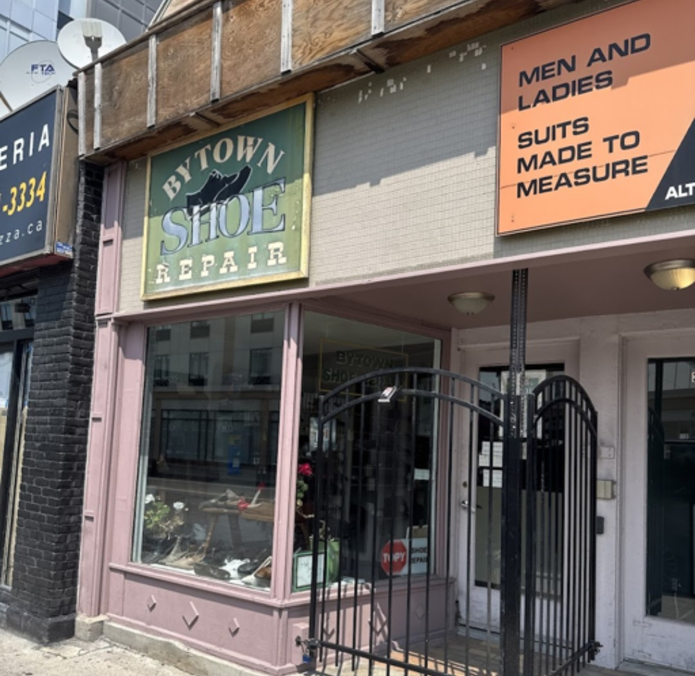
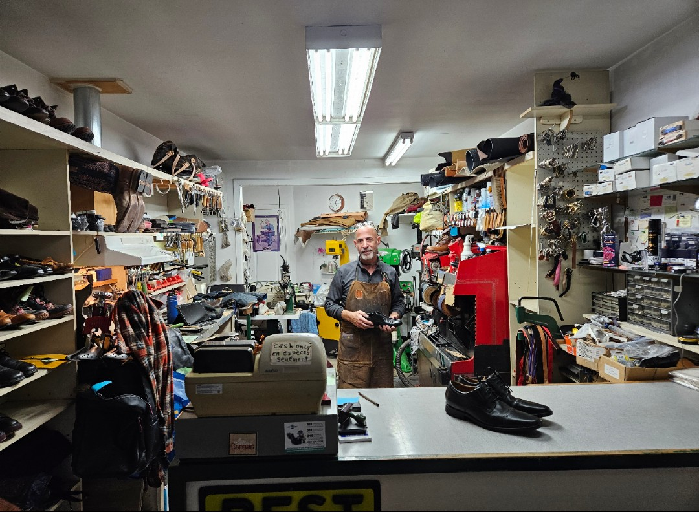
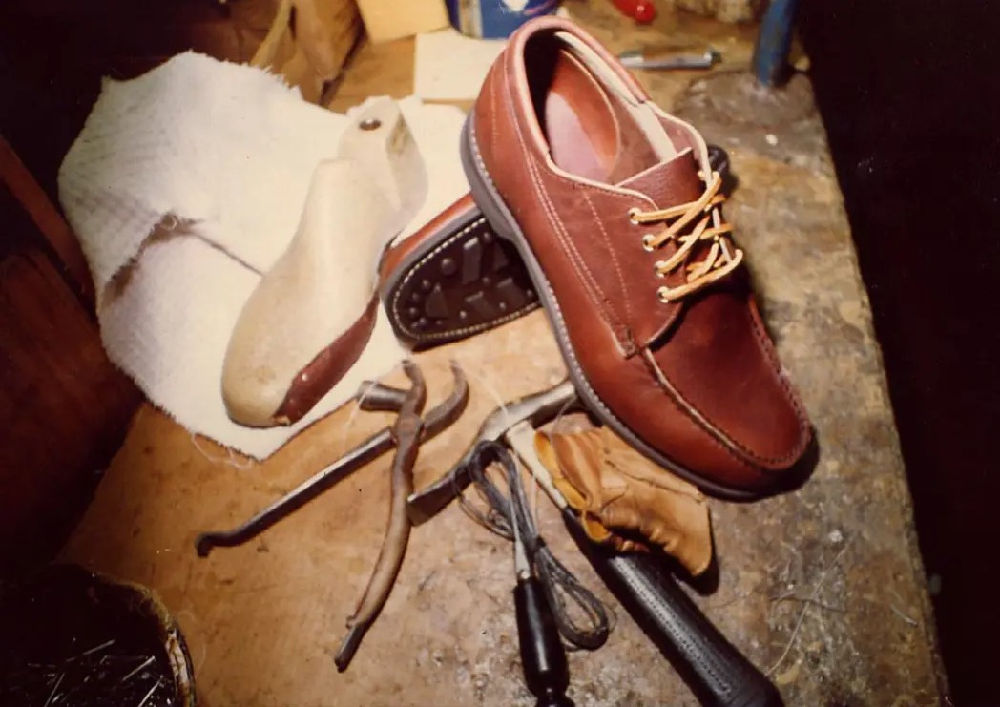

Profile · Issue 01 · September 2026
At Bytown Shoe Repair, Joseph Haddad works on the increasingly unusual assumption that broken doesn't necessarily mean finished.

A shoe might arrive with its sole separated along one edge, the stitching gone where the leather meets the welt, the toe creased pale where a foot has pressed into it for years. Whoever brought it in has already decided the shoe is worth something. The question that has to be answered next isn't quite the one they walked in with.
Joseph Haddad has spent years answering versions of it.
At Bytown Shoe Repair, on Dalhousie Street in Ottawa's ByWard Market, the work is soles and heels, stitching pulled and re-laid, leather stretched, buffed, dyed, and patched. Bags and other leather goods come through the same narrow door as the shoes, because the material and the judgment involved are largely the same.

None of this is unfamiliar work — trades like it have existed for as long as people have needed the things on their feet to survive contact with the ground — but very little of it is mechanical. Before anything gets resoled or restitched, someone has to look at what's in front of them and decide whether the effort is worth spending at all. A sole can be replaced, but only if the upper it's attached to is sound enough to be worth the labour. Stitching can be pulled and redone, but the leather around it has to hold the new thread the same way it held the old. A heel that's worn unevenly says something about how a person walks, and repairing it well means correcting for that rather than simply restoring its original shape. None of it is guesswork, exactly, but very little of it can be reduced to a fixed procedure either.
Inside, the shop is stacked the way a workshop gets stacked by actual use rather than design: shelves of finished shoes and leather bags along the walls, sewing machines and hand tools crowded around a service counter, a handwritten sign warning that the till only takes cash. None of it looks arranged for anyone's benefit. It looks like a room that has been doing the same job, the same way, for long enough that everything has simply found where it belongs.
Price is only ever part of the decision that gets made at that counter. A pair of boots that cost several hundred dollars might be on its third sole by the time it's finished being useful, resoled specifically because the person wearing them isn't finished with them yet. A cheaper shoe might be perfectly repairable and still not worth repairing — not because the craft involved is any different, but because the arithmetic doesn't favour it. A leather bag worth almost nothing on resale might be irreplaceable to the one person who owns it, not for what it's made of but for where it's been. Comfort factors into it just as heavily as sentiment does — a shoe that's been worn long enough to conform to a specific foot doesn't have an equivalent waiting on a shelf somewhere, no matter what it costs to replace. Discontinued styles complicate the decision further: if a shoe can no longer be bought new at any price, repairing the one that already exists stops being a choice between saving money and spending it, and becomes the only way to keep wearing it at all.
Mass manufacturing made replacement cheap.
Human skill never became cheap.
At a certain point those two facts cross, and it becomes genuinely less expensive to replace something than to have it repaired by someone who knows what they're doing. A shop like this exists on the far side of that line, competing less against other repair shops than against a new object's sticker price — and people choose the repair anyway, often enough that a business built entirely on that choice can keep its doors open. It's a strange thing to compete against: a skill that takes years to develop, measured against a factory equivalent built for a fraction of the labour cost. That people still choose the repair suggests the decision was never purely financial to begin with.

Joseph Haddad isn't Ottawa's last cobbler, and the shop doesn't present itself as though it were. A handful of other shoe-repair businesses are still scattered through the city, in storefronts and shopping-centre corridors, doing broadly similar work. That's arguably the more interesting fact, not the less interesting one. It means the trade hasn't survived by becoming rare enough to be remarkable. It has simply kept going, in more than one place at once, doing the same unglamorous arithmetic every time something worn arrives at the counter.
None of this is really about shoes. For most of human history, wear wasn't automatically the end of an object's life — things were maintained, resoled, patched, sharpened, and altered as a matter of course, because replacing them outright usually wasn't realistic. A great deal of what we buy now is designed, priced, or manufactured inside a system where replacement is the easier path and repair is the exception someone has to go looking for. That isn't a moral failing, and older things weren't automatically better made or more deserving of a second life. It's simply a different set of assumptions about what happens to an object once it starts to fail.
Broken doesn't necessarily mean finished.
A shoe that arrives with its sole hanging loose may leave again capable of doing what it was built to do. Nobody will particularly notice. That's usually the point of a good repair — the object simply goes back to being ordinary, its second life indistinguishable from its first. Not everything that comes through the door leaves that way. Some of it isn't worth the work, and Joseph is the one who has to say so.
But something will, today, and it will be worn again long before anyone remembers exactly what was wrong with it.